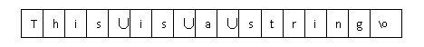
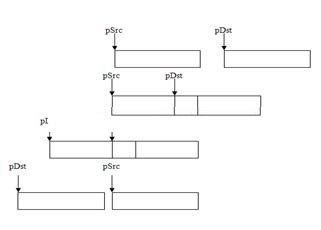

06字符串
字符串是编程语言中表示文本的数据类型。在程序开发过程中，程序员将会涉及大量的字符串操作和处理。因此，字符串类的面试题也层出不穷。
6.1字符串定义
所谓字符串是由零个或多个字符组成的有限序列。C语言字符串可以定义为："c1c2c3c4..cn\0"。
从定义的形式可以看出，C语言的字符串是以’\0’结尾的。程序在存放字符串的时候，会自动在字符后面加上一个’\0’作为结尾。
6.2字符串常量
在第一章学习Hello world程序的时候，遇到的”Hello world!”就是一个常量字符串。即通过双引号包含起来的部分就是一个常量字符串。比如：
“This is a string”
那么这个字符串的实际存放形式为：
‘∪’表示空格字符，虽然肉眼看不到字符串结尾的那个’\0’，但是在存储空间，在末尾却可以看到’\0’是存在的。所以，字符串实际上也是一个以’\0’作为最后一个元素的字符数组。
合理化解释：因为没有提供内存长度空间信息，，通过特定字符’\0’来提示字符串结束位置。
6.3字符串中的转义字符
既然字符串是通过双引号包含起来的字符的有限集合，那么，假如双引号本身也是字符串中的一个字符，怎么办呢？比如下面这句话：
This is a "real" special dream
如果要用一个双引号来把这句话包含起来，就变成了：
"This is a "real" special dream"
这样显然是不正确的，因为本来一个字符串就变成了"This is a"和" special dream"以及中间的real并没有成为一个字符串。
解决的办法是用转义字符来表示中间的双引号，即写成下面这个样子：
"This is a \"real\" special dream"
6.4程序中如何使用字符串
字符串常量可以赋值给一个字符指针或者一个字符数组，比如：
/*1*/ char *str = “this is a string”; /*2*/ char str2[] = “this is a string”; /*3*/ char str3[100] = “this is a string”;
语句1将“this is a string”赋值给了字符指针str。此时，str的值为“this is a string”的第一个字符的地址。实际上，“this is a string”这个常量字符串存储在C语言程序的常量区。而str即指向了存储这个常量字符串的首地址。
语句2会将常量区中的“this is a string”拷贝到数组里面。并且数组的长度将为“this is a string” (包含’\0’）的长度。
语句3会将常量区中的“this is a string”拷贝到数组里面。并且数组的长度将为100个字节。语句3和语句2的区别是语句2没有指明数组的长度，那么数组的长度就是字符串的长度。
对于上面的3个赋值表达式，分别使用sizeof和strlen的计算结果又是什么呢？
sizeof(str) = 为指针的长度，所以在X86上是4，在X64上是8。
sizeof(str2)=17。str2数组的长度，但str2没有显示指出数组的长度，而是按照分配给它的字符串的长度来分配。所以，值为17。
sizeof(str3)=100。Sizeof计算的是str3数组的长度，所以结果为100。
strlen(str)=16。Strlen计算的是字符串的字符个数（不喊’\0’）。
strlen(str2)=16。原因同上。
strlen(str3)=16。原因同上。
当然，也可以把字符串存放在动态分配的内存空间中。比如：
char *p = (char *)malloc(100);
if (p == NULL)
return;
memset(p, 0, 100);
strcpy(p, “hello world”);
这样，以p为首地址的内存中将存放着”hello world”这个字符串。
6.5多字节字符串与宽字符字符串
在C语言编程中，用char表示一个ASCII字符占用1个字节，而用wchar_t表示一个UNICODE字符占用2个或4个字节。一个char类型的字符串以”\0”结尾。而一个wchar_t类型的字符串则以”\0\0”结尾。
在C语言中，还应该区分一个多字节字符串和宽字符字符串的概念。在多字节字符串中，每个字符的编码宽度都不等，可以是一个字节，也可以是多个字节。比如：
char * str = "Hello, world!您好，世界！";
上面是一个多字节字符串。其中的英文字符占一个字节，而中文字符占2个字节。
而宽字符串中，每个字母占用的字节数是一样的。比如：
wchar_t *wstr = L"Hello, world!您好，世界！";
上面是一个宽字符串。其中每个字符，无论英文字母还是中文字符，都占2个字节。可以调用wctomb()等函数将宽字符串与多字节串进行相互转换。
6.6字符串遍历
C程序员必须学会对字符串的循环遍历。字符串的遍历的几种方式如下：
char *str="hello world!";
1 while循环遍历
while(*str!=‘\0’)
{
printf(“%c”, *str);
str++;
}
2 for循环遍历
for(;*str!=‘\0’;str++)
{
printf(“%c”, *str);
}
3 数组方式遍历
for(int i=0; str[i]!=‘\0’;i++)
{
printf(“%c”, str[i]);
}
6.7字符串长度计算
因为字符串是以’\0’结尾的，所以可以在知道字符串首地址的情况下求出字符串的字符个数。在C库中，有如下函数可以用来计算字符串的字符个数（不包含’\0’）；
针对多字节字符串：
char *str="hello world"; size_t len =strlen(str);
针对宽字节字符串：
wchar_t *wstr=L"hello world"; size_t len= wcslen(wstr);
针对tchar（根据工程字符集设置分别对应ASICC和UNICODE字符串）：
TCHAR *tstr=_T("hello world");
Size_t len = __tcslen(tstr);
当然，我们也可以自己实现一个用来计算字符串字符数的函数：
size_t my_strlen(const char *str)
{
char *s=(char *)str;
while(*s++);
return s-str;
}
6.8字符数组与字符串关系
char str1[]={‘h’,’e’,’l’,’l’,’o’,’ ‘,’w’,’o’,’r’,’l’,’d’};
char str2[]=”hello world”;
上面的语句定义了2个字符数组，其中str1[]在初始化后，最后一个元素不是’\0’。
而str2[]在初始化后，最后一个字符是’\0’，因此str1[]不能当做字符串来处理，而str2[]是可以当做字符串来处理的，因为它最后一个字符是’\0’。
6.9字符串库函数应用
C的标准库为程序员提供了一组专门用于字符串操作的函数。在了解了字符串的定义之后，就要学习一下在程序里如何利用与字符串相关的函数来操作字符串了。这些操作在大家以后写程序的时候，会经常遇到。一般来说，在程序里，起码有10%到20%的代码都是在处理各种与字符串相关的问题，因此熟练掌握这些字符串操作函数，对提高编程效率是很有好处的。
6.9.1 strlen
函数strlen()用于计算字符串中的字符个数（不含结尾字符’\0’）。对strlen的使用方法如下：
char *str="hello world"; size_t len =strlen(str);
6.9.2 strstr
函数strstr()用于查找字符串中子串的位置，第一个参数为主串，第二个为子串。如果未找到，则返回NULL。Strstr()的使用方法如下：
char *pstr=(char *)strstr("hello world","xyz");
if(pstr!=NULL)
printf("%s\n",pstr);
6.9.3 strcmp,stricmp
函数strcmp()用于比较2个字符串是否相等，而stricmp()也是用于比较两个字符串是否相等，但其中多了个i(ignore)，表示在比较的时候忽略字符串的大小写。而strncmp()和strnicmp()则是比较2个字符串前n个字符的大小。如果2个字符串相等，函数返回零。
char *st3 = "helloworld";
char *st4 = "hElloMallocfree";
if(strcmp(st3,st4)==0)
{
printf("%s == %s\n",st3,st4);
}
else
{
printf("%s != %s\n",st3,st4);
}
if(stricmp(st3,st4)==0)
{
printf("%s == %s\n",st3,st4);
}
else
{
printf("%s != %s\n",st3,st4);
}
if(strnicmp(st3,st4,5)==0)
{
printf("%s == %s\n",st3,st4);
}
else
{
printf("%s != %s\n",st3,st4);
}
6.9.4 strchr/strrchr
函数strchr()用于从左边开始在字符串中查找某个字符的位置；而strrchr()则是从字符串中的右边开始查找某个字符的位置。若未找到，则返回NULL。
char *str=”hello world”; char *p=strchr(str,’o’); char *pr=strrchr(str,’o’);
6.9.5 strcpy,strcpy_s
函数strcpy()用于将字符串复制到目标缓存，但并不检测目标缓存的长度是否大于字符串的长度，无论是否超过，都照拷不误，因此是很多缓冲区溢出漏洞的罪魁祸首。于是在Windows平台推出了新的安全拷贝函数strcpy_s()。新的函数将检测字符串的长度是否超过了目标缓存的大小，如果超过，则拒绝拷贝并返回失败。
char *str = "hello world!";
1 strcpy()的使用方法，已被淘汰，勿用，否则会在高版本编译器报4996警告。
char buf[1024] = {0};
strcpy(buf, str); // 没有长度参数
printf("buf:%s\n",buf);
2 strcpy_s()的使用方法，注意在buf后面多了一个长度作为函数的参数。
memset(buf, 0, 1024);
strcpy_s(buf,1024, str);
printf("buf:%s\n",buf);
6.9.6 strcat,strcat_s
函数strcat()用于字符串的拼接。比如将”hello ”和”world”拼接在一起，组成”hello world”。与strcpy()类似，strcat()并不检测目标缓冲的大小是否能够容纳下拼接之后的字符串，因此也容易造成缓冲区溢出漏洞。而新的安全拼接函数strcat_s()避免了这个问题。
char path[MAX_PATH]={0};
1 strcat()的使用方法，已被淘汰，勿用：
strcpy(path, "c:\\windows\\");
strcat(path, "system32\\drivers\\x.sys");
2 strcat_s()的使用方法，限制了写入长度的安全方法：
strcpy_s(path,260,"c:\\windows\\system32\\");
strcat_s(path,260,"hellodrv.sys");
6.9.7 strtok,strtok_s
在C语言中，strtok()的原型为：char *strtok(char *s, char *delim)，它的功能为：将字符串s拆分为为一组字符串，delim为分隔符。
比如对于IP地址，“192.168.100.1”，可以通过分隔符’.’将IP地址拆分为4个字符串。函数strtok_s比strtok安全，增加了溢出检测。下面是分别使用strtok和strtok_s的例子。
1 strtok() ，已经淘汰，请使用strtok_s()
char *s = "Nice to meet you!";
char *d = " ";
char *p = NULL;
p=strtok(s,d);
while(p)
{
printf("%s\n",p);
p = strtok(NULL,d);
}
2 strtok_s()例子
char ip[]="192.168.100.1";
char *next = NULL;
char *pfield=strtok_s(ip,".",&next);
while(pfield)
{
printf("%s\n",pfield);
pfield=strtok_s(NULL,".",&next);
}
下表将C语言中对ASCII字符串与UNICODE字符串的操作函数做一个归纳比较：
表 ASCII字符串与UNICODE字符串的操作函数对比

6.10自己实现字符串操作函数
在C语言中，字符串有一个标准的C库来处理字符串操作。平时编程的时候，只需要调用它们而不用关心其具体实现。然而，很多知名的软件公司很爱考查大家一些字符串的问题，其中就包括了一些常见的C库字符串操作函数的具体实现。比如，笔者本人就被考查过strstr()、strtok()、reversestr()、strcpy()等。现在，就把这些典型的字符串操作函数提出来讨论和实现。大家会发现，如果能够自己去实现这些函数，对编程能力的提高有很大的帮助。顺便提及的是，在C语言中，字符串以’\0’作为结束标志，在编码时需要用它来判断是否到达了字符串的结尾，在字符串拷贝的时候，也一定不要在拷贝结束后漏加它。
6.10.1 实现strstr()
在C语言里strstr()的原型为：char *strstr(char *s1, char *s2)，它的功能是从字符串s1中寻找s2第一次出现的位置（不比较结束符NULL)。
/* 算法1：普通算法 */
char * _strstr (
const char * str1,
const char * str2
)
{
char *cp = (char *) str1;
char *s1, *s2;
if (str1== NULL || str2==NULL)
return NULL;
if ( !*str2 )
return((char *)str1);
while (*cp)
{
s1 = cp;
s2 = (char *) str2;
while ( *s1 && *s2 && !(*s1-*s2) )
s1++, s2++;
if (!*s2)
return(cp);
cp++;
}
return(NULL);
}
6.10.2 实现strtok()
在C语言中，strtok()的原型为：char *strtok(char *s, char *delim)，它的功能为：分解字符串为一组字符串。s为要分解的字符串，delim为分隔符字符串。由于此函数的功能比较难理解，在给出实现算法前先看看它的具体使用例子：
#include <string.h>
#include <stdio.h>
int main(void)
{
char s[] = "Nice to meet you!";
char *d = " ";
char *p = NULL;
p=strtok(s,d);
while(p)
{
printf("%s\n",p);
p = strtok(NULL,d);
}
getchar();
return 0;
}
那么函数执行的结果是字符串s将会被空格字符分隔为”Nice” “to” “meet” “you!”4个字符串。下面来实现strtok()的算法：
char * strtok (char * string, const char * control)
{
char *str;
const char *ctrl = control;
/* map为一个256位数组位图，用来标记分隔字符串中的每个字符 */
char map[32];
int count;
/*
* nextoken为static类型，static类型具有记忆功能，下此执行此函数时，
* 其值依然有效。因此它记住了程序执行过程中字符串的下一个位置
*/
static char* nextoken;
//将位图数组初始化为0
for (count = 0; count < 32; count++)
map[count] = 0;
//将分隔字符串对应的那位设置为1
do
{
map[*ctrl >> 3] |= (1 << (*ctrl & 7));
} while (*ctrl++);
if (string)
str = string;
else
str = nextoken;
//如果字符串开始都为分隔字符，忽略
while ( (map[*str >> 3] & (1 << (*str & 7))) && *str )
str++;
string = str;
for ( ; *str ; str++ )
{
//如果字符串中的字符为分隔字符，则进行分隔
if ( map[*str >> 3] & (1 << (*str & 7)) )
{
//在此位置用’\0’代替分隔字符进行分隔
*str++ = '\0';
break;
}
}
//用static变量记住下一个分隔的起始点
nextoken = str;
//返回分隔后的字符串
if ( string == str )
return NULL;
else
return string;
}
6.10.3 实现strcpy()
在C语言中，strcpy()的原型：char *strcpy(char *dest,char *src)，它的功能是把src所指由NULL结束的字符串复制到dest所指的数组中。下面是实现的strcpy()函数：
char *strcpy(char *strDest, const char *strSrc)
{
assert( (strDest!=NULL) && ( strSrc!=NULL));
if ( strDest == strSrc)
return strDest ;
char *pDest = strDest ;
char *pSrc =strSrc;
while( (*pDest ++ = *pSrc ++) != '\0')
;
//*pDest = ‘\0’;
return strDest;
}
6.10.4 实现strcmp()
在C语言中strcmp()的原型：int strcmp(char *s1,char * s2)，它的功能：比较字符串s1和s2：
当s1<s2时，返回值<0
当s1=s2时，返回值=0
当s1>s2时，返回值>0
下面是对strcmp()的一个实现：
int strcmp(char* str1, char* str2)
{
while(*str1 && *str2 && *str1==*str2)
{
++str1;
++str2;
}
return *str1-*str2;
}
6.10.5 实现tolower()
在C语言中tolower()的原型：char tolower(char ch)，它的功能为：将大写字母转换为小写字母。下面给出它的实现算法：
/* 算法1 */
char tolower(char ch)
{
/* 加入ASSERT断言，要求输入必须为大写字母 */
ASSERT(ch >= ‘A’ && ch <= ‘Z’);
return (ch + ‘a’ – ‘A’);
}
另外一种实现：当输入为大写字母时将其转换为小写字母。否则返回原来的字母。这更加符合函数的实际使用情况。
/* 算法2 */
char tolower(char ch)
{
if (ch >= ‘A’ && ch <= ‘Z’)
return (ch + ‘a’ – ‘A’);
else
return ch;
}
6.10.6 删除特定字符或字符组
将一个字符串中某个特定字符删除。要求不能增加额外的存储和较高的效率。
void DeleteChar(char *str, char c)
{
assert(str != NULL);
int iDes = 0, iSrc = 0;
do
{
if (str[iSrc] != c)
str[iDes++] = str[iSrc];
} while(str[iSrc++] != ‘\0’);
}
如果删除的为一个特定的字符组，那么算法又该如何写呢？
void DeleteChars(char *str, char chr[], int n)
{
assert(str != NULL);
char tmp[256] = {0};
for (int i = 0; i < n; i++)
{
tmp[chr[i]] = 1;
}
int iDes = 0, iSrc = 0;
do
{
if (!tmp[str[iSrc]])
str[iDes++] = str[iSrc];
} while(str[iSrc++] != ‘\0’);
}
此算法的关键之一在于设置了标记读写位置的变量，这样不用增加额外的内存空间和重复的拷贝，直接在给定的空间实现了算法。关键之二在于用一个数组来记录待删除的字符组，有利于对待删除的字符进行查找和判定。
6.10.7 识别字符串中单词
int GetWordNum(const char *str)
{
asssert(str != NULL);
int num;
char *pChar = str;
while (*pChar != ‘\0’)
{
if (*pChar != ‘\0’)
char *pBegin = pChar;
while (*pChar != ‘ ‘ && *pChar++ != ‘\0’)
;
char *pEnd = pchar--;
num++;
pChar++;
}
return num;
}
英语单词是通过字母间的空格来进行区别的。因此，设置两个位置指针，一个为pBegin，一个为pEnd, pBegin与pEnd之间就是要统计的单词。
6.10.8 逆置字符串
将一个字符串逆置。比如将”hello, world”逆置后为”dlrow ,olleh”。
void ReverseString(char * str)
{
int n;
char c;
n = strlen(str);
for (int i = 0; i < n/2; i++)
{
c = str[i];
str[i] = str[n-1-i];
str[n-1-i] = c;
}
}
按照单词的顺序将字符串逆置
6.10.9 实现memcpy()
函数memcpy()与strcpy()不同，需要考虑内存重叠的可能。如图3-1所示，pSrc与pDst的位置可能存在4种可能关系。其中当(pSrc<pDst) && ((char*)pSrc+size > pDst)时，如果拷贝是从头开始正向拷贝，就会在拷贝过程中污染pSrc中还未拷贝的数据。因此，在这种情况下必须反向拷贝。
图 pSrc与pDst的相对位置关系
void memcpy(void *pDst,const void *pSrc, size_t size)
{
assert(pDst != NULL);
assert(pSrc != NULL);
/* pSrc与pDst共享同一块内存区域 */
if((pSrc<pDst) && ((char*)pSrc+size > pDst))
{
char *pstrSrc= (char *)pSrc + size -1;
char *pstrDst = (char *)pDst + size -1;
/ * 从尾部逆向拷贝 */
while(size--)
*pstrDst -- = *pstrSrc--;
}
else
{
char *pstrSrc= (char *)pSrc ;
char *pstrDst = (char *)pDst ;
/* 从起始部正向拷贝 */
while(size--)
*pstrDst++ = *pstrSrc++;
}
}
6.10.10 IP字符串与整数的转化
本人亲临的微软的面试题之一。题意为：将IP地址字符串与32位整数进行互相转化，其中不能应用strtok()等C库函数。下面为代码的实现：
//输入为一个常量IP字符串
//输出为一个32位整数
int ipstr2int(const char *ip, unsigned int *ipvalue)
{
if (ip == NULL || ipvalue==NULL)
return -1;
unsigned int result = 0;
int tmp = 0;
int shift = 24;
const char *pEnd = ip;
const char *pStart = ip;
while(*pEnd != '\0')
{
//找到地址符里的’.’
while(*pEnd != '.' && *pEnd != '\0')
pEnd++;
tmp = 0;
//计算每个’.’之间的数值"192"-->192
//atoi
while(pStart < pEnd)
{
tmp = tmp * 10 + (*pStart - '0');
pStart++;
}
if(tmp<0 || tmp >255)
{
return -1;
}
//将计算好的数值分别左移24位，16位，8位，0位
result += (tmp << shift);
shift -= 8;
if (*pEnd == '\0')
break;
pStart = pEnd + 1;
pEnd++;
}
*ipvalue = result;
return 1;
}
32位整数中，每个字节对应了IP地址中的一个部分。因此，要实现IP整数对IP地址字符串的转换，只需要获得整数的每个字节并做相应的转换。
//不使用库函数将32位整数转化为IP字符串
//0x12 34 56 78-->“18.52.86.120”
int ip2str(unsigned int ip, char *buf, size_t len)
{
if(buf == NULL || len<16)
{
return -1;
}
size_t length = sizeof(ip);//32位ip地址的字节数
unsigned char *p = (unsigned char *)&ip+sizeof(ip)-1;//指向ip地址最高字节
char *p1 = buf;
while(length)
{
unsigned char tmp = *p;
char *pstart= p1;
//18-->'81'
do
{
*p1++ = tmp%10 +'0';
tmp /= 10;
}while(tmp);
char *pend = p1-1;
//'81'-->'18'
for(;pstart<pend;pstart++,pend--)
{
char ch = *pstart;
*pstart = *pend;
*pend=ch;
}
if(length>1)
*p1++ = '.';
length--;
p--;
}
*p1 ='\0';
return 1;
}
//使用库函数sprintf将32位整数转化为IP字符串
int ip2str(unsigned int ip, char *buf, size_t len)
{
if(buf==NULL ||len<16)
{
return -1;
}
unsigned char *p = (unsigned char *)&ip;
sprintf(buf, "%u.%u.%u.%u", *(p+3),*(p+2),*(p+1),*(p));
return 0;
}
int _tmain(int argc, _TCHAR* argv[])
{
char ip1[16];
char ip2[16];
ip2str(0x12345678, ip1, 16);
printf("ip:%s\n", ip1);
iptostr(0x12345678,ip2, 16);
printf("ip:%s\n", ip2);
ip2str(0xffffffff, ip1, 16);
printf("ip:%s\n", ip1);
return 0;
}
6.11 字符串初始化
在代码里，经常会用字符串进行初始化操作。比如：
void func(void)
{
char str1[] = "hello world";
char *str2="hello world";
...
}
对于上面2条初始化语句，它们的区别是什么呢？
1 首先，"hello world"是一个字符串常量，存放在静态常量区。
2 str1是一个字符数组，分配在栈上，存储空间由"hello world"的长度（含'\0')决定，存放的内容由"hello world"进行初始化。 也就是编译器会把静态常量区的"hello world"拷贝到栈上的str1数组区域，对数组进行初始化。
3 str2是一个字符指针，指向了静态常量区"hello world"的首地址。
4 计算长度的区别
strlen(str1)=strlen(str2)
sizeof(str1)=12;
sizeof(str2)=4(x86)or 8(x64)
5 读写区别
str1内存中的值是可以修改的；
str2指向的内存中的值是不可修改的（静态常量区）。
本页共594段，15507个字符，23881 Byte(字节)